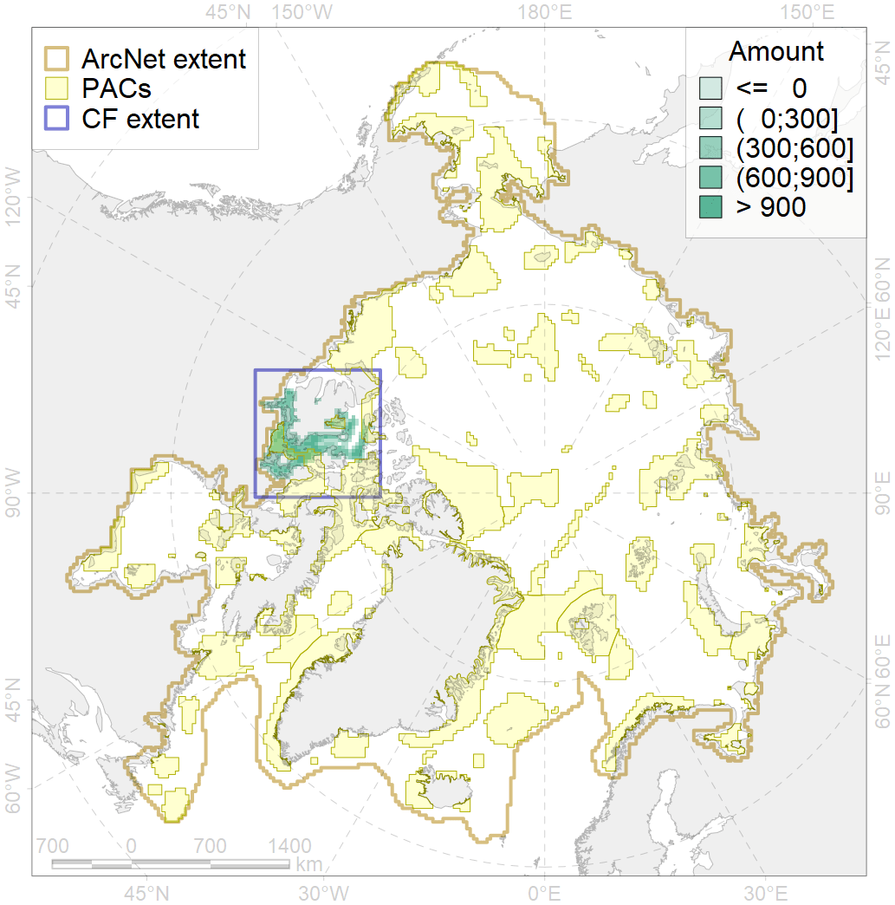
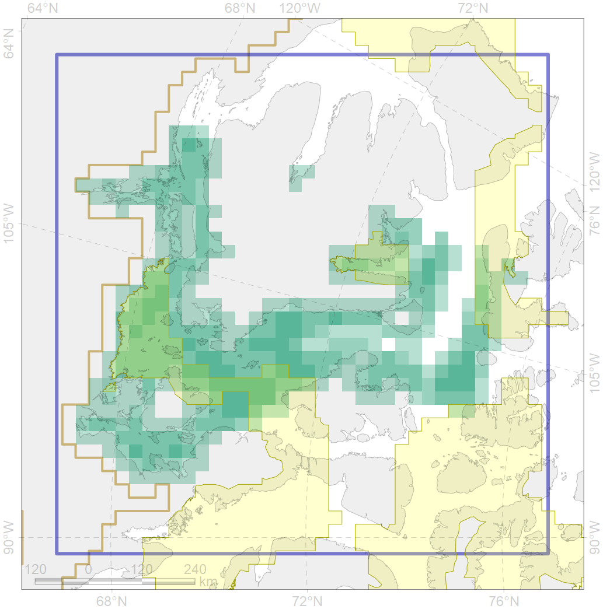

2004

| CF code | 2004 |
| CF name | Bearded seal whelping areas in the south of the Canadian Archipelago |
| Time Period | 2007-2018 |
| Source(s) | Surrogate data; bathymetry from http://www.naturalearthdata.com/downloads/10m-physical-vectors/; DFO |
| Seasonality | March-June |
| Depth Horizon | 0-200 m |
| Methodology | Habitat preference research and expert input |
| Use Restrictions | Open source |
| Author Name | Irina Trukhanova |
| Notes | |
| Scenario’s Target | 0.24 |
| Target Achievement | 0.269 (Scenario: 112.2%) |
| PAC | Share of the Total Amount within the PAC | Share of the Target Achievement for the ArcNet | PAC’s Contribution to the Target Achievement |
|---|---|---|---|
| 52 | 0.1% | 0.3% | 0.3% |
| 63 | 2.0%2.1% | 7.3%7.6% | 6.5%6.8% |
| 64 | 2.1%2.3% | 6.2%6.4% | 5.5%5.7% |
| 65 | 21.0%22.1% | 66.0%70.4% | 58.8%62.7% |
| inner | 25.2%26.6% | 79.7%84.7% | 71.1%75.5% |
| outer | 74.8%79.5% | 32.5%48.3% | 28.9%43.0% |
| † supplement values are for area consistence whereas principal values are for Accenter compatible gridded stats |